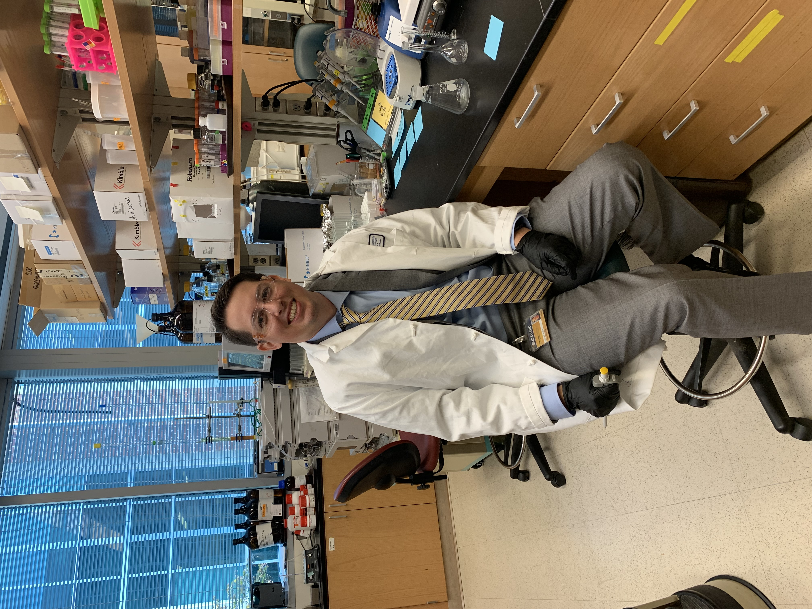
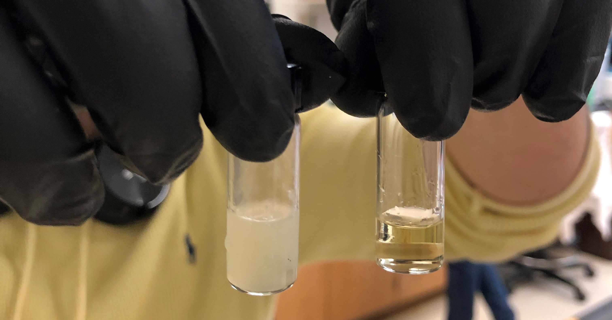
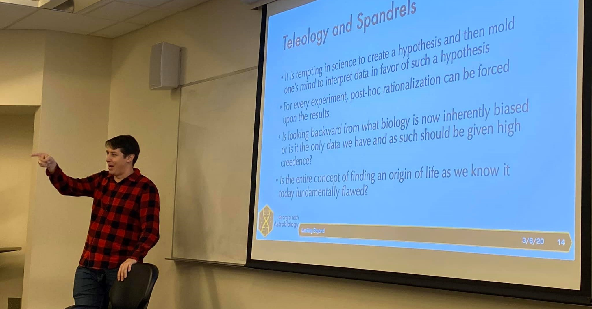

About Me

I am a Visiting Assistant Professor at Trinity University, where I am currently teaching
Biochemistry. I previously completed my Ph.D. in Chemistry and Biochemistry in the
Hud Lab at Georgia Tech. As an academic, I
have been driven by my desire to understand life from first a biological, and then a chemical,
perspective. Both within and outside of science, I believe that to be challenged in one's beliefs is
to truly understand them, and I welcome open and honest discussion about any topic.
My nickname "Tyro" is a shortening of my first and last name, but I've come to learn that
as a real word, "tyro" is of neoclassical origin, stemming from an alternate spelling of the latin
word "tiro", meaning recruit or learner.
In 1610, the iatrochemist Jean Beguin published what has been cited as the first chemistry textbook,
the Tyrocinium Chymicum, cementing
the shift from alchemy to chemistry
in the sciences.
I believe in the concept of beginner's
mind and strive to maintain such an attitude in my approach to learning about all topics,
both those which are new to me and those with which I am familiar. Here, I will try to cultivate my
own Tyrocinium, or place of learning, in all of my efforts.
Research

One-Pot Formation of Pairing Nucleosides
Relevant Publication:
In preparation
The chemistry that allows sugar formation and nucleobase glycosylation occurs under similar
conditions. To better understand the likelihood that these reactions could have occurred on the
early Earth, I am working toward recreating these key reactions in a single pot, without intervening
purification steps.
Ketose Sugars and Nucleoside Formation
Relevant Publication:
A Plausible Prebiotic Path to Nucleosides:
Ribosides and Related Aldosides are Generated from Ribulose, Fructose, and Similar Abiotic
Precursors.
The formation of sugars on the early Earth could have happened by a variety of processes beyond the
traditional formose reaction. Some of these reliably produce ketose sugars, which could have served
as a pool of stable sugars that could "leach" substrates for nucleobase capture via interconversion
to aldoses. In this way, nucleosides of glucose and ribose could have formed robustly on the early
Earth. For a video presentation on this topic, see this youtube video.
Prebiotic Noncanonical Nucleoside Formation
Relevant Publication:
Prebiotic Synthesis of
Noncanonical Nucleosides and Nucleotides.
Noncanonical nucleosides could have predated the traditional "RNA World" in chemical evolution, and
their formation could have occurred in a variety of ways. Importantly, divalent nucleosides are much
more likely to react with sugars in chemical contexts that preclude hydroxide as a nucleofuge.
Teaching

Teaching
Visiting Assistant Professor of Chemistry
I have taught two classes thus far at Trinity University, including Biochem I and Biochemistry
Laboratory.
Biochem I
I have taught Biochem I in a flipped-classroom style, utilizing some previously-created videos and
some I made myself, in order to foster productive engagement during the class period. Complementing
the standard Biochemical curriculum, I included an emphasis on 3D-molecular visualization as well as
incorporating discussions about racism in science and medicine as provided by my co-teacher.
Biochemistry Lab
I taught Biochemistry Laboratory collaboratively with a co-teacher, and provided students excellent
opportunities to experience a variety of experimemtal techniques including FRET, circular dichroism,
fluorescence spectroscopy, mass spectrometry, isoelectric focusing, SDS-PAGE, and column affinity
chromatography.
Advanced Chemical Principles
In this course, I encouraged students first entering the upper-division curriculum in Chemistry to
seek out knowledge and rely on their foundational skills to develop protocols for various lab
experiments. Removing the "rails" on which previous lab courses have been run often daunts the
students at first, but I encouraged them to remember the ways in which they have performed
experiments previously, and pushed them to hone their scientific writing skills.
Undergraduate Minor in Astrobiology
I am working on creating an Undergraduate Minor in Astrobiology, modeled after the Graduate Certificate in
Astrobiology already offered at Georgia Tech, an effort which I hope will improve
interdisciplinary learning among students who began with an interest in one or a few of the many
fields encompassed by Astrobiology.
Tech to Teaching
I have completed the Tech to
Teaching certificate program at Georgia Tech, including a Minor in Higher Education.
Teaching Assistant Experience
-
2012–2013: "Climate Change" (University of Southern California)
Instructed a
lab/project section involving multiple models and demonstrations involving climate change and
its effects on the Earth today.
-
2017–2018: "Introduction to Quantitative Analysis" (Georgia Institute of Technology)
Supervised lab sections focused on the accurate measurement and statistical analysis of a
variety of standard chemical experiments
including titrations, gravimetric analysis, spectroscopic analysis, and more.
-
2021: "Survey of Biochemistry" (Georgia Institute of Technology)
Assisted
instruction, held office hours, and wrote assessment content for an upper-level biochemistry
course for undergraduate students.
Outreach:
As part of the Center for Chemical Evolution,
I participated in such events as Buzz
on Biotech, the Atlanta Science Festival,
and STEAM night at Mableton Elementary School as a
volunteer to manage and implement scientific demos
for children and the general public.
Blog
I use Medium to blog; you can find me at medium.com/@tyler.roche.
Contact
Email: tyler.roche@gmail.com
Affiliation Links: